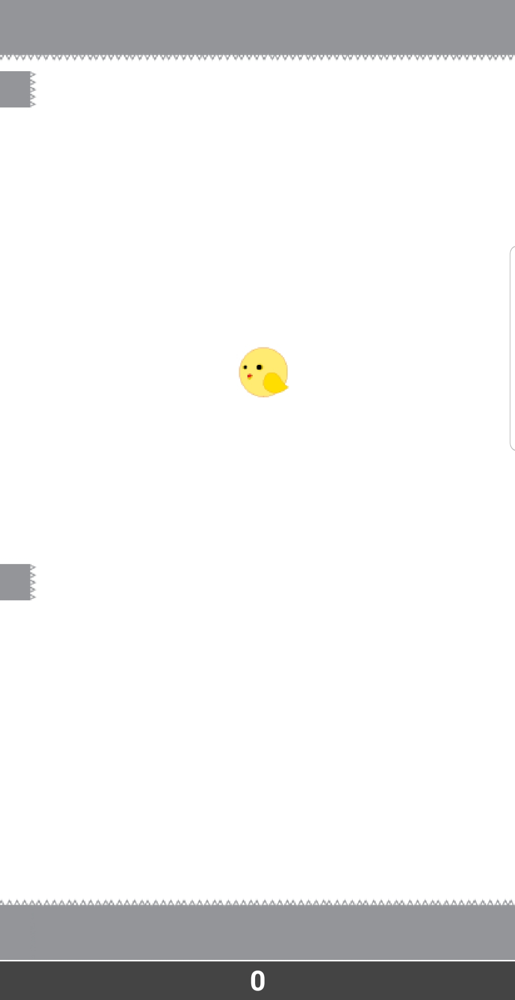
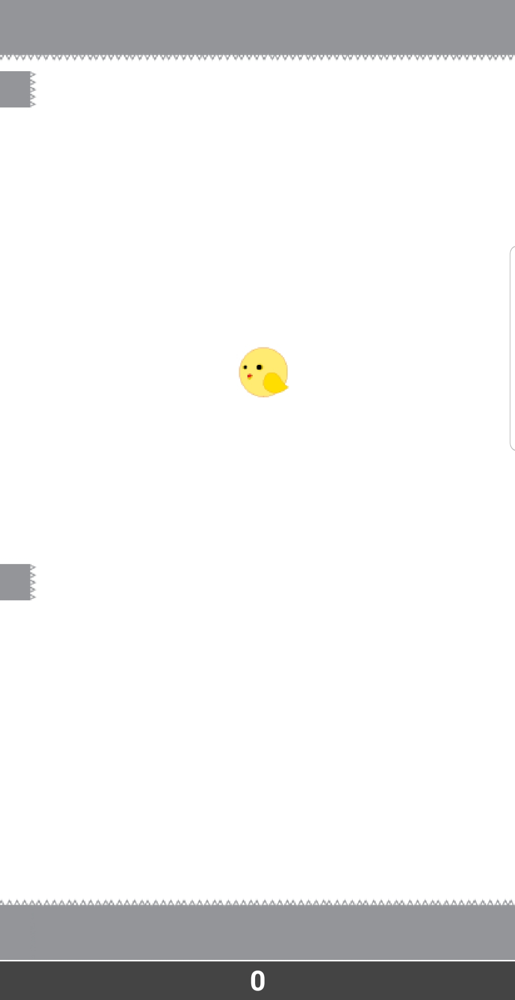

Photo Borders
Computer Science Principles
March 20, 2020 - April 1, 2020
Background: This project was built using Python and the Pillow library. The goal of this project was to modify images to satisfy a client's requirements; our client tasked us with creating borders around images. At the beginning of the project, I had trouble coding with the Pillow library and had to constantly look up the documentation. Through this process though, I had familiarized myself with the documentation and got better at researching. Another lesson that I learned from this project was how useful modules and libraries are. They can save you time on a big project or even open up new possibilities for new projects, you can use them as long as you give credit to the creator.
Showcase 
